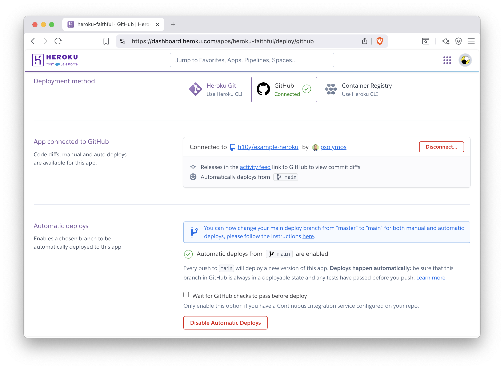
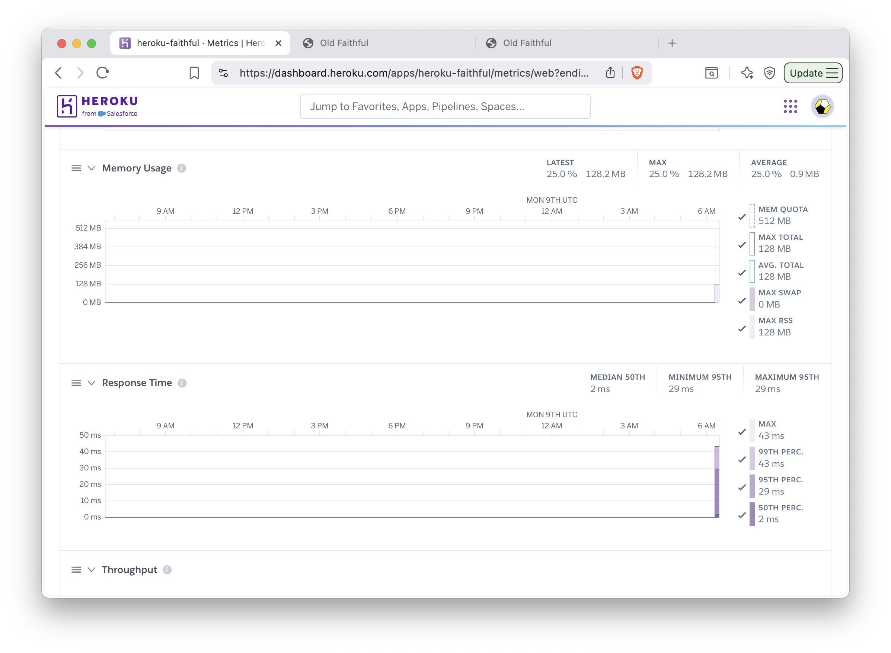
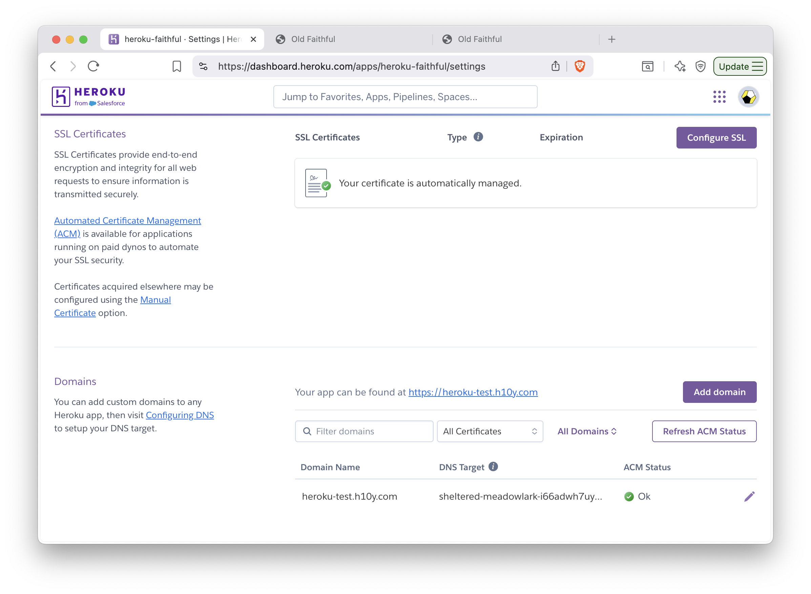
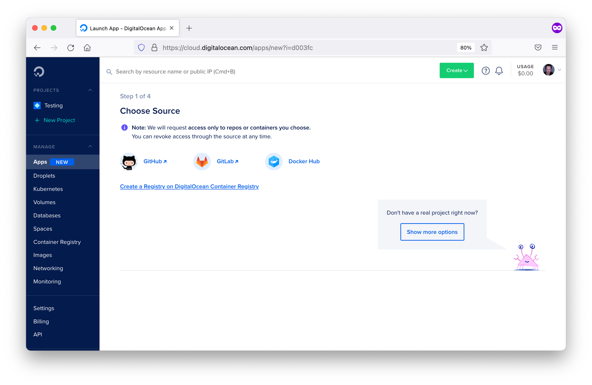
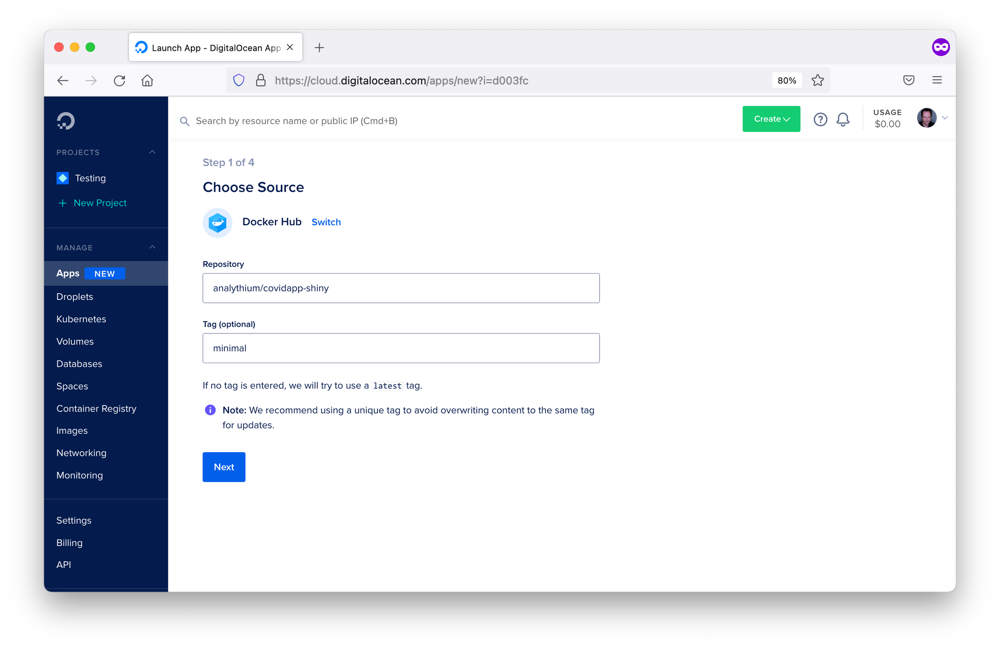
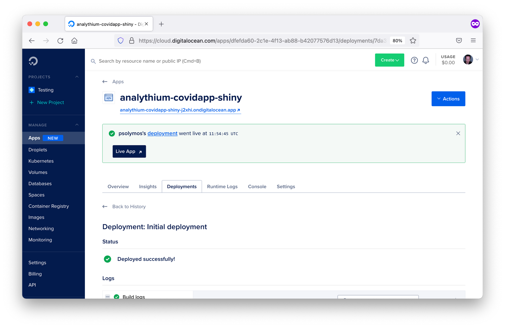
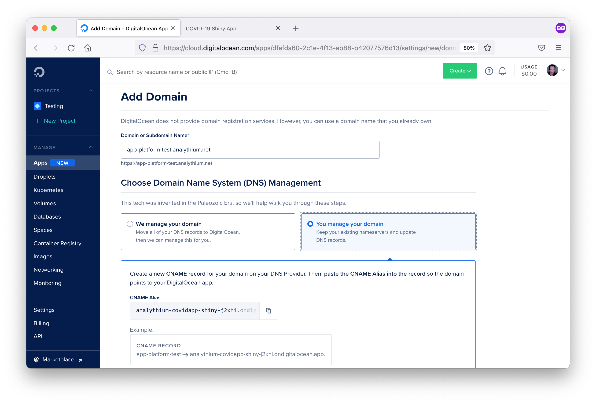
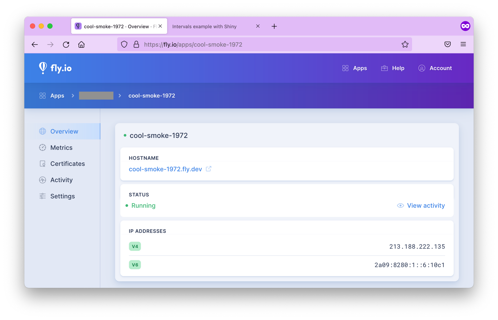
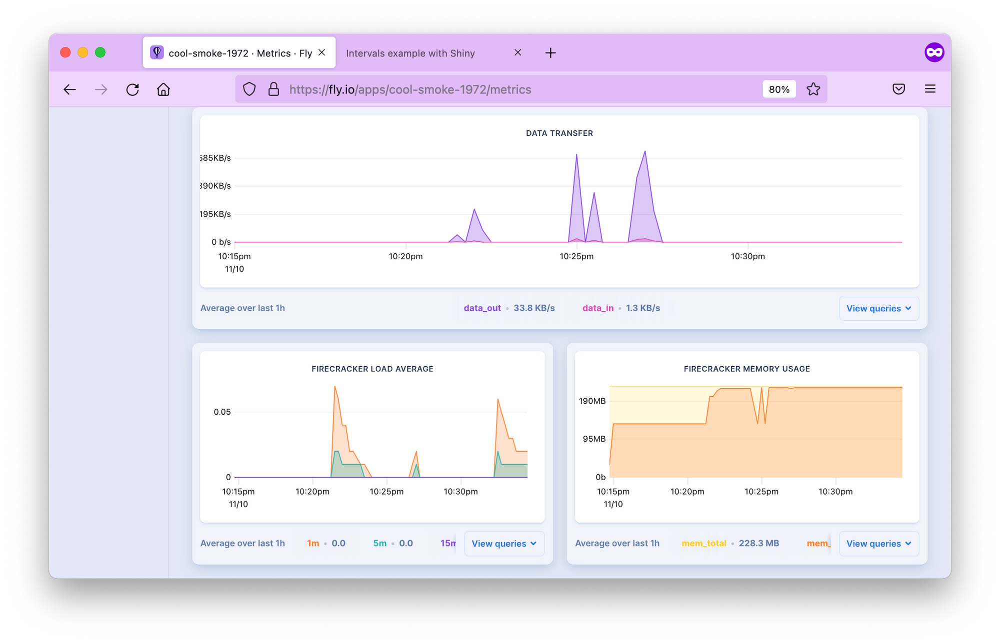

Chapter 19 Hosting Platforms
This chapter covers how to run your containerized Shiny application on a hosting platform. A hosting platform enables you to deploy your application without worrying about managing a server.
If you are unfamiliar with containers, please refer to Chapter 15.
Hosting platforms are services that provide the infrastructure and environment needed to deploy, manage, and serve applications over the Internet. They offer a range of solutions to meet different needs, from hosting static sites to running dynamic web applications without worrying about the underlying infrastructure. These platforms typically provide features such as automated deployment, scalability, performance optimization, and security measures.
By abstracting the complexities of server management, hosting platforms allow developers to focus on building and improving their applications. In this section, we explain how to get started on different PaaS’s while highlighting the costs and maintenance/support efforts.
Previously, we mentioned Shiny Shiny-Specific PaaS in Sections 7.2.1 and 9. This section focuses on more general PaaS that rely on the use of containerization technology to deploy Shiny applications.
General PaaS (Platform as a Service) refers to cloud providers that provide a managed solution for deploying applications that are not necessarily Shiny such as javascript web applications. General PaaS are often cheaper due to competition among different providers. Most providers provide a core set of features which includes deployment using command line tools, routing traffic to your application with custom domains, and analytics of your application’s usage.
As General PaaS need to support a multitude of applications, the recommended way to deploy applications on these cloud providers is to containerize your Shiny application. With containerization, all the required dependencies for your Shiny application are installed in a separate container. This allows you to deploy your application on different computers and platforms without worrying about compatibility issues related to dependencies. We outline how to containerize your Shiny application in Chapter 17.
Most of the services presented in this section will require familiarity with the command line, as many of the deployment platforms require deployment to their platform with their own command line tools. We recommend reviewing at least Chapter 3.2 if you need a refresher on using the command line.
In this section, we outline how to deploy containerized Shiny applications for Heroku (Section 19.1), DigitalOcean App Platform (Section 19.2), and Fly.io (Section 19.3). The services that we introduce requires a nominal hosting fee for getting setup, as these platforms manage all the backend infrastructure for you. Our introduction to General PaaS is non-exhaustive, and there are many other platforms that support the deployment of containerized Shiny applications that we mention in Section 19.4.
In each of the sections we outline in a box at the beginning some of the considerations you might make before choosing the hosting platforms including: costs, skill level, support, and scale and performance.
19.1 Heroku
Heroku was one of the first cloud platforms developed for deploying web applications and has been in development since 2007. Originally developed for Ruby on Rails applications, it has evolved to be programming language agnostic through the development of buildpacks for programming languages, and the support of containers for application deployment. Heroku applications run in a collection of lightweight Linux containers called dynos.
A Heroku buildpack is a set of scripts to build application source code for deployment on the Heroku platform. Buildpacks are developed both by the Heroku team and the wider community. However, a drawback to the buildpacks is that not all system dependencies might be available for your Shiny application when deploying on Heroku and will require modifications to a buildpack. Therefore, it is recommended to use a Docker-based stack that uses a containerized version (learn more in Chapter 17) of your application to handle all the system dependencies.
Prerequisites for deploying on Heroku include familiarity with git and the command line (see Chapters 3.2 and 3.3). The Heroku dashboard can also be used to define app deployments.
19.1.1 Deployment from the Command Line
Heroku provides a command line tool for deploying to their platform.
To install the Heroku command line, follow the instructions here:
https://devcenter.heroku.com/articles/heroku-cli#install-the-heroku-cli.
Use heroku --version to test if the CLI is ready to be used. Then type
heroku login which will prompt you to type in credentials. Next time
the CLI will log you in automatically.
In this step, we assume that you have containerized your Shiny application.
That means your Shiny application can be run using specifications in a
Dockerfile.
The heroku.yml in your application’s root directory is required
to deploy to Heroku. The following example heroku.yml specifies the
Dockerfile to be used to build the image for the app’s web process:
The build section specifies the build process for the application. The docker key specifies that you are
using Docker to build the application. The web key indicates that it is a web process. The Dockerfile
specifies the location of the Dockerfile relative to your root directory that is used for building a container
image.
The run section indicates how your Shiny application will be run. Under the web key it specifies how
to run the web process for your Shiny application. In Python it would be along the lines of:
While in R, it would be along the lines of:
To deploy with your Dockerfile, you will have to specify the PORT environment
variable and to modify the CMD line of your Dockerfile to take in the PORT environment
variable. This is Heroku specifies the a port for the container when deploying
your application.
You will now need to initialize a git repository in the root of your Shiny app directory if you haven’t done so already. Only repositories with new commits will deploy once the app is already on Heroku:
# Initialize the local directory as a Git repository
git init -b main
# Add the files and stage them for commit
git add .
# Commit tracked changes and sign-off the message
git commit -s -m "First commit"Create the Heroku application with the container stack. The command will give you the application URL:
heroku create --stack=container
# Creating app... done, ⬢ morning-plateau-34336, stack is container
# https://morning-plateau-34336.herokuapp.com/ | https://git.heroku.com/morning-plateau-34336.gitA Heroku git remote is also added for the application to track changes. This means that changes will be sent to not just your Git service of choice, i.e. GitHub, but also to Heroku.
You can configure an existing application to use the container stack
using heroku stack:set container.
Finally, you can deploy your application to Heroku, replace main with your branch name
if it is different. This will trigger a git push and a docker build on a remote Heroku
server and docker push to the Heroku container registry:
git push heroku main
# Enumerating objects: 4, done.
# Counting objects: 100% (4/4), done.
# Delta compression using up to 4 threads
# Compressing objects: 100% (3/3), done.
# Writing objects: 100% (4/4), 1.09 KiB | 1.09 MiB/s, done.
# Total 4 (delta 0), reused 0 (delta 0), pack-reused 0
# remote: Compressing source files... done.
# remote: Building source:
# remote: === Fetching app code
# remote:
# remote: === Building web (Dockerfile)
# remote: Sending build context to Docker daemon 3.072kB
# remote: Step 1/3 : FROM registry.gitlab.com/analythium/shinyproxy-hello/hello
# remote: latest: Pulling from analythium/shinyproxy-hello/hello
# remote: 4363cc522034: Pulling fs layer
# ...
# remote: Successfully built 8b891983b438
# remote: Successfully tagged 6dc2e345582f143cd104cf98fec788c65e9a72a6:latest
# remote:
# remote: === Pushing web (Dockerfile)
# remote: Tagged image "6dc2e345582f143cd104cf98fec788c65e9a72a6" as "registry.heroku.com/morning-plateau-34336/web"
# remote: Using default tag: latest
# remote: The push refers to repository [registry.heroku.com/morning-plateau-34336/web]
# remote: cec4817fd20b: Preparing
# ...
# remote: Verifying deploy... done.
# To https://git.heroku.com/morning-plateau-34336.git
# * [new branch] main -> mainOpen the app in your browser using the heroku open command.
19.1.2 Deployment using the Web Dashboard
Sign up for Heroku and log in. You might have to provide a valid credit card to be able to use the resources. You will also need the heroku command line tool.
Find a Create New App button, click it.
You can give the app a name, e.g. heroku-faithful and select a region where
the app will be deployed.
Choose the GitHub based deployment. Heroku has a GitHub application that can be
used to grant access to your account, so it can pull changes and update the apps
accordingly.
You’ll need the heroku.yml file in the root of the repository as explained
in the previous section.
Log in to the heroku account then set the stack to container:
heroku login
# Logging in... done
# Logged in as <your_heroku_email>
heroku stack:set container --app=heroku-faithful
# Setting stack to container... doneFigure 19.1 show the Heroku dashboard where you can connect to the GitHub repository and can enable automatic deploys from a given git branch. You can trigger the deployment manually, this will result in Heroku building the container image and deploying it. Click the Open app button to see the app deployed with a Heroku provided URL, e.g. https://heroku-faithful-45457b65a2b8.herokuapp.com/.

Figure 19.1: GitHub based deployment in Heroku.
You can view the build logs and check the metrics for the app in the dashboard (Fig. 19.2). Application logs are also available after clicking the More button and selecting it from the drop-down menu.

Figure 19.2: Monitoring metrics in Heroku.
19.1.3 Custom Domain and HTTPS
Adding custom domain and setting TLS certificates for HTTPS access can be done
in the app dashboard after the app is successfully deployed (Fig. 19.3).
Navigate to Settings and configure the SSL Certificate using your own
certificate or by selecting Let’s Encrypt for Automated Certificate Management.
Next, click the Add domain button. Provide the domain name here and click Next.
The next page will reveal the URL target that you can copy, that will look like
sheltered-meadowlark-i66adwh7uy89vnhycaw2inzo.herokudns.com.
Use this value in your DNS settings to add a CNAME record pointing to this
URL.

Figure 19.3: Managing custom domains and TLS certificates in Heroku.
19.1.4 Scaling
We will use the Heroku CLI to scale the app and enable session affinity:
heroku features:enable http-session-affinity --app=heroku-faithful
# Enabling http-session-affinity for ⬢ heroku-faithful... doneSession affinity uses a cookie to maintain
information about a user’s session. Once the feature is enabled,
the Heroku router will start adding an HTTP cookie named heroku-session-affinity
to every new request and response. This cookie contains no private application information.
Based on this cookie value, the Heroku router will be able to determine the appropriate dyno for each request.
The least expensive dyno type that we can use with automatic certificate management
is the basic (with 500 MB RAM). This, however, does not allow horizontal scaling.
Change dyno type to allow
scaling to >1 replicas, for this you need at least the Standard-1X
(with 500 MB RAM, web=standard-1x) or Standard-2X (1 GB RAM, web=standard-2x) dyno type:
heroku ps:type web=standard-1x --app=heroku-faithful
# Scaling dynos on ⬢ hello-shiny... done
# === Dyno Types
# type size qty cost/hour max cost/month
# ──── ─────────── ─── ───────── ──────────────
# web Standard-1X 1 ~$0.035 $25
# === Dyno Totals
# type total
# ─────────── ─────
# Standard-1X 1Scale the number of web dynos to 2 or more:
heroku ps:scale web=2 --app=heroku-faithful
# Scaling dynos... done, now running web at 2:Standard-1XYou can now refresh your browser, and open a new incognito window to see how a new user would connect.
Go to the logs in the dashboard (under the More button). You’ll see the web.1 and the web.2
replicas listed. Trying this with the load balancing app should pass the sticky session test.
You can see how the app failing if you remove session affinity with
heroku features:disable http-session-affinity --app=heroku-faithful and run the tests again.
The dyno type and replication can be changed according to demand. The standard dyno types (1X and 2X) also
allow preboot to be turned on
(heroku features:enable preboot --app=heroku-faithful). This old instances are not shut
down before new instances can receive traffic, this eliminates cold start
behavior when deploying new versions of the web app.
You can destroy the app with heroku apps:destroy --confirm=heroku-faithful --app=heroku-faithful.
Multiple Apps in the Same Heroku Instance
One can use the rocker/shiny image that has Shiny Served Open Source included,
and add multiple apps under different paths as explained in Section 17.6.6.
This way you can host multiple apps using a single instance (dyno).
19.1.5 Summary
Heroku is a popular platform to host apps of any kind at scale without managing infrastructure. Shiny apps are best hosted through Docker images. Heroku can be seen as the containerized version of shinyapps.io. However, the free tier appears to include more apps and free hours. Once on the paid tier, payment applies to each app separately. Upgrade as demand dictates, you can also switch back to the free tier once a predictable surge is over.
19.2 DigitalOcean App Platform
The DigitalOcean App Platform (DOAP) can publish applications from your GitHub repository, or publish a container image you have already uploaded to a Docker registry. The platform supports GitOps (git push-based deployment), and vertical and horizontal scaling.
In spirit and most practical aspects, the DOAP is similar to Heroku in the sense that you can use Buildpacks or Dockerfiles to build applications. There is no native Buildpack for R. But as we explain in Chapter 17, Shiny apps can be containerized. This gives us a way to deploy to DOAP seamlessly.
19.2.1 Prerequisites
You must sign up for a DigitalOcean account and set up the appropriate billing information. After logging in, choose the ‘Apps’ option in the dashboard. After clicking ‘Launch Your App’, you are presented with source options such as: Docker Hub and GitHub. This screen can be seen in Figure 19.4. We will delve into GitHub and Docker Hub in the subsequent sections. Docker Hub allows deployment from a container registry while GitHub allows deployment from a code repository.

Figure 19.4: DOAP source selection options.
19.2.2 Docker Hub Deployment
After choosing the Docker Hub deployment option, you will need to specify the Docker Hub repository image location similar to the screen in Figure 19.5. To have an image on Docker Hub, you first must build and publish an image as explained in Chapter 16.4.1.

Figure 19.5: Docker Hub configuration in DOAP.
Once an image has been specified, you will have to define the parameters for running your image. This includes specifying the type of application which is ‘Web Services’ in the case of Shiny, the run command, the port that your application runs on in the container, and any environment variables for configuring your application.
Once the deployment parameters have been defined, you will need to specify the name you want DigitalOcean to identify your application as, as well as the region you want your Shiny app hosted in.
Finally, you must specify a plan, which at a minimum is Basic as you are deploying a non-static application.
You can also specify the number of replicates for horizontal scaling.
After clicking launch, you will see the app deployed on a subdomain: app-name-hash.ondigitalocean.app.
19.2.3 GitHub Deployment
By linking with GitHub, you can enable the automatic deployment of your
application to the DigitalOcean App Platform.
To get started, you must define in the source repo: /.do/app.yaml.
The .do folder contains the app specification (app.yaml) file that defines how the
Shiny app should be deployed.
name: app-platform-shiny
services:
- dockerfile_path: Dockerfile
github:
repo: h10y/faithful
branch: main
deploy_on_push: true
name: app-platform-shinyChoose the GitHub deployment option when deploying your application. Follow the prompts and install the GitHub app for your personal account or the organization of your choice. Select ‘All repositories’ or ‘Only select repositories’ as appropriate. Finally, click ‘Save’.
Now go back to the Apps control panel, you will see a screen similar to Figure 19.6. Select the repository from the dropdown menu, specify the branch you wish to deploy. If you want to deploy both a development and a production version of the same repository, you can create multiple apps with the same repo but using different branches.
Figure 19.6: GitHub repository selection screen in DOAP.
Leave ‘autodeploy’ checked if you want to trigger new deployments when the code changes, then click ‘Next’. Review the app settings inferred from the Dockerfile, i.e. the HTTP port, etc. Type in the name of the service, select the data region, then click ‘Next’. The final step lets you define the performance of the app and the corresponding pricing.
After a few minutes, you should see the green checks besides the build and deployment log entries. Building the image might take some time, depending on the number of dependencies in your app. Follow the app URL from the control panel to see the app online served over HTTPS.
If you make any changes to your GitHub repository, then a new version of the app will be deployed. One potential issue with this GitHub integration is it does not depend on passing tests before deployment. If you want to test your changes before deployment, here are the steps to follow:
- Push changes to the development branch,
- Run automated tests for the development branch, e.g. using GitHub actions,
- Set up the production branch as a protected branch, so that merging pull requests require passing tests.
19.2.4 Programmatic Deployment
DigitalOcean also offers a command line tool with a YAML specification file for deploying applications to the DigitalOcean App Platform. Once you have deployed an app, you can find the YAML specification file for your deployed app under the Settings tab in apps. Most of the info in the spec file is self-explanatory and relates to all the settings defined when deploying from the browser GUI. To use the app spec from the command line you have to install the doctl command-line tool and follow the steps described in the docs to use the API token to grant doctl access to your DigitalOcean account.
19.2.5 Logs
The dashboard (similar to Figure 19.7) of your deployed app allows you to inspect the deployment and runtime logs under the “Runtime Logs” tab. You can even access the container through the console under the “Console”. Under the “Insights” tab, you can also check CPU and memory consumption.

Figure 19.7: Dashboard of deployed application in DOAP.
19.2.6 Custom Domains
You can add a custom domain using a CNAME record with your DNS provider. Go to your app’s settings tab, find the ‘Add Domain’ button. You will be presented with a screen similar to Figure 19.8. Follow the prompts and copy the app’s current URL. Go to your DNS provider and add a CNAME record, and save. After some time the custom domain will be live and listed as ‘Active’ under settings.

Figure 19.8: Custom domain configuration in DOAP.
19.2.7 Summary
DigitalOcean App Platform allows you to deploy containerized applications from a container image hosted in a container registry, through a container image specified in a code repository, or programmatically. It can be an easier to setup alternative to Heroku for hosting containerized applications.
The next chapter will cover another alternative container hosting platform named “Fly.io” which offers the option of multi-region availability for your hosted Shiny application.
19.3 Fly.io
Fly.io is an application hosting platform. The platform is ideal for hosting worldwide apps with low latency. Fly.io enables the launch of containerized applications with the command line.
19.3.1 Prerequisites
First of all, you’ll need Docker installed on your local machine.
This hands-on intro from the Fly
documentation is a good place to start to make sure you have everything
installed. First, you need to install
flyctl, that is the
command-line utility that lets you work with Fly. Follow instructions
for your operating system of choice.
Sign up for a Fly account. Set up email/password combination or use your GitHub social login. You will also be prompted for credit card payment information, required for charges outside the free tier on Fly (see pricing info, you can run 3 apps for free). Without a credit card, you will not be unable to create a new application on Fly.
Now you can sign in with
flyctl:
19.3.2 Creating a Fly.io App
We will use the Docker image from the
analythium/shinyproxy-hello GitHub project. If you
have another Docker image with a Shiny app in it, feel free to use a
different DOCKER_IMAGE. Once the image tag is specified, you have to
pull the image to your local machine:
With that app pulled, you can go ahead and create a Fly app from the existing Docker image. You’ll be prompted to select the account and the data center region:
flyctl launch --image $DOCKER_IMAGE
# Creating app in /Users/Peter
# Using image ghcr.io/h10y/faithful/py-shiny:main
# ? Select organization: <organization_name>
# ? Select region: sea (Seattle, Washington (US))
# Created app cool-smoke-1972 in organization <organization_name>
# Wrote config file fly.tomlThere are quite a few regions to select from, you are offered the one closest to you based on your IP address.
Open and edit the newly created fly.toml (see the Fly
docs for detailed config
options). Leave all the contents except for the internal_port that you
should change from 8080 to 3838 because this is the port exposed in
the Docker image:
If you are using a different image, make sure you set this to the port that the app is running at.
19.3.3 Deploying to Fly.io
Use the flyctl deploy command to deploy the app:
flyctl deploy
# Deploying cool-smoke-1972
# ==> Validating app configuration
# --> Validating app configuration done
# Services
# TCP 80/443 ⇢ 3838
# Searching for image 'ghcr.io/h10y/faithful/py-shiny:main' locally...
# image found: sha256:b11b4100...
# ==> Pushing image to fly
# The push refers to repository [registry.fly.io/cool-smoke-1972]
# e86054b4a909: Pushed
# ...
# e749bc5a8d9b: Pushed
# deployment-1636607519: digest: sha256:33b633191... size: 3245
# --> Pushing image done
# Image: registry.fly.io/cool-smoke-1972:deployment-1636607519
# Image size: 1.2 GB
# ==> Creating release
# Release v2 created
#
# You can detach the terminal anytime without stopping the deployment
# Monitoring Deployment
#
# 1 desired, 1 placed, 1 healthy, 0 unhealthy [health checks: 1 total, 1 passing]
# --> v0 deployed successfullyAs a result of the deploy command, the image is pushed into the Fly registry. Watch the process from the command line. If you quit the process, you can still check the app status:
flyctl status
# App
# Name = cool-smoke-1972
# Owner = <organization_name>
# Version = 0
# Status = running
# Hostname = cool-smoke-1972.fly.dev
#
# Deployment Status
# ID = 1c31f05d-b84c-d5da-4613-9679727495e5
# Version = v0
# Status = successful
# Description = Deployment completed successfully
# Instances = 1 desired, 1 placed, 1 healthy, 0 unhealthy
#
# Instances
# ID PROCESS VERSION REGION DESIRED STATUS HEALTH CHECKS RESTARTS CREATED
# 00d78cfc app 0 sea run running 1 total, 1 passing 0 5m8s agoYour app is up and running when the status changes to successful.
Inspect the container logs with flyctl logs.
The output will give the Hostname (app_name.fly.dev where app_name
is the app name from the TOML configuration file). Copy the Hostname and
paste in the browser tab, or use flyctl open to visit the app.
19.3.4 Metrics and Logs
If you go to the Fly.io dashboard and click on your app name, you’ll see a menu with the app overview with the status, green means the app is healthy (Fig. 19.9).

Figure 19.9: The Fly.io dashboard for the app.
The Metrics tab shows HTTP response times, concurrency (meaningful only if you scaled the app to more than 1 replica), data transfer speed, memory usage, etc. (Fig. 19.10). You can access logs for up to 2 days. You can also manage TLS certificates here, view activity and settings.

Figure 19.10: Metrics in the Fly.io dashboard.
19.3.5 Setting up a Custom Domain
It is recommended to use an A or AAAA record if you set up an apex
domain (like example.com). Get the IPv4 and IPv6 addresses and add
those to your DNS.
flyctl ips list
# TYPE ADDRESS REGION CREATED AT
# v4 213.188.220.171 global 5m47s ago
# v6 2a09:8280:1::6:11cc global 5m47s agoThis means creating an A or AAAA record with your domain name provider to point to the IPs listed by the command above. Give a few minutes to the name servers. Once the records are propagated, you should be able to access the app at your custom domain.
19.3.6 Adding TLS/SSL certificate
You might have noticed the crossed lock symbol when loading your Shiny app, indicating that the app is served over HTTP.
Let’s add TLS certificate to the domain name:
export DOMAIN_NAME="your.domain.com" # change domain here
flyctl certs create $DOMAIN_NAME
# Your certificate for your.domain.com is being issued.
# Status is Awaiting certificates.Wait for a bit, issuing certificates might take a couple of minutes. Once it is done, you should see that a certificate has been issued:
flyctl certs show $DOMAIN_NAME
# The certificate for fly-shiny.analythium.net has been issued.
# Hostname = your.domain.com
# DNS Provider = googledomains
# Certificate Authority = Let's Encrypt
# Issued = ecdsa,rsa
# Added to App = 24 minutes ago
# Source = flyIf you visit your app URL now, the lock symbol looks good, the Shiny app is now served over HTTPS
19.3.7 Autoscaling in Multiple-Regions
Fly.io allows the deployment of your application across data centers located worldwide including: Amsterdam, Atlanta, Paris, Dallas, Parsippany, Frankfurt, Sao Paulo, Hong Kong, Ashburn, Los Angeles, London, Chennai, Tokyo, Chicago, Santiago, Seattle, Singapore, Sunnyvale, Sydney, Toronto, Bathurst.
Fly.io makes sure users are directed to the geographically closest location to
ensure performance is as best as can be.
Use the flyctl to list the regions for the deployed app. Depending on
your location, you will see different regions listed. I deployed the app
from Toronto (yyz). If you are in doubt about what the 3-letter codes
mean, these are airport codes, so just search for them.
My backup regions are ewr (Parsippany, NJ US) and bhs Bathurst,
Australia. If for any reason, the app can’t be deployed in Toronto, Fly will try to
spin it up in one of the backup regions. You can build your own region
pool. For example, flyctl regions add ord cdg would add Chicago and
Paris to the region pool:
flyctl regions add ord cdg
# Region Pool:
# cdg
# ord
# yyz
# Backup Region:
# ams
# bhs
# ewr
# lhr
# vinUse flyctl regions remove ord to remove ord from the region pool.
Once you defined the regions where you want your apps to run, it is time
to set how many instances your app will have. But when do you need a new
instance and what is an instance in this case?
Instances and concurrency
Fly.io uses a virtualization technology called Firecracker microVMs to run multi-tenant container services. So an instance is a microVM. Think of it as a portion of a shared virtual CPU and 256 MB memory units. These units are scaled up and down.
In your fly.toml configuration
file you can find a section about concurrency with the following defaults:
This concurrency setting determines the microVM capacity. The default is 20 concurrent connections. When a user connects, the request is sent to the nearest microVM with capacity. If the existing VMs are at capacity, Fly launches more in the busiest regions. Idle microVMs are shut off. The room between the soft and hard limits gives time for new instances to be brought to life.
Scale count
The scale count is the number of instances. A scale count of 1 (default) means that 1 instance of the app is running in 1 of the regions in the region pool. Scale count refers to horizontal scaling.
You can increase the scale count with the flyctl scale count command.
flyctl scale count 2 tells us to run 2 instances of your application.
You can see your current scaling parameters with flyctl scale show:
flyctl scale show
# VM Resources for cool-smoke-1972
# VM Size: shared-cpu-1x
# VM Memory: 256 MB
# Count: 2
# Max Per Region: Not setThe scaled app is placed in different regions in the region pool. Use
the flyctl status command to list instances and which regions they are
running in:
flyctl status
# App
# Name = cool-smoke-1972
# Owner = <organization_name>
# Version = 3
# Status = running
# Hostname = cool-smoke-1972.fly.dev
#
# Instances
# ID PROCESS VERSION REGION DESIRED STATUS HEALTH CHECKS RESTARTS CREATED
# 535327bc app 3 yyz run running 1 total, 1 passing 0 3m7s ago
# 0c0bd76e app 3 cdg run running 1 total, 1 passing 0 4h55m agoScaling virtual machines
The physical servers that the microVM instances are running on have 8–32
CPU cores and 32–256 GB of RAM. Multiple virtual machines (VMs) share
the same physical box. The number of cores and amount of memory
available in the virtual machine can be set for all application
instances using the flyctl scale vm command.
flyctl platform vm-sizes
# NAME CPU CORES MEMORY
# shared-cpu-1x 1 256 MB
# dedicated-cpu-1x 1 2 GB
# dedicated-cpu-2x 2 4 GB
# dedicated-cpu-4x 4 8 GB
# dedicated-cpu-8x 8 16 GBYou can change the type of your VMs by
adding the required size name to fly scale vm or using the
fly scale memory to directly set the VM’s memory allocation. This type
of scaling is referred to as vertical scaling.
Autoscaling
Autoscaling means that the Fly system will create at least the minimum number of application instances across the regions in your region pool. New instances will be created based on traffic up to the maximum count.
By default, autoscaling is disabled and scale count is in effect. There are two types of auto-scaling models: Standard and Balanced. Here is what the Fly docs say:
- Standard: Instances of the application, up to the minimum count, are evenly distributed among the regions in the pool. They are not relocated in response to traffic. New instances are added where there is demand, up to the maximum count.
- Balanced: Instances of the application are, at first, evenly distributed among the regions in the pool up to the minimum count. Where traffic is high in a particular region, new instances will be created there and then, when the maximum count of instances has been used, instances will be moved from other regions to that region.
The command flyctl autoscale standard will turn on the Standard
autoscaling plan. If you want the Balanced plan with min/max counts of 3
and 5, use flyctl autoscale balanced min=3 max=10. The command
flyctl autoscale disable will disable autoscaling.
When you are done, use flyctl destroy $APP_NAME to destroy the
deployed application. Don’t forget to remove the A or CNAME record from
your DNS settings too.
19.3.8 Summary
Fly.io is a quick and easy way for deploying containerized Shiny app to a PaaS for free. There are some features that set Fly.io apart from other similar platforms. If you need multi-region availability and really flexible scaling for your app, Fly can give that to you at a reasonably low cost and with no ops involved.
19.4 Other Providers
We have outlined the processes for deploying your Shiny application using platforms such as Heroku, DigitalOcean App Platform, and Fly.io in this chapter. These platforms simplify deployment by handling networking and application execution, while also providing analytics to monitor your Shiny application’s performance. The platforms that we have outlined are not comprehensive, and there are several other deployment options you may want to explore:
shinyapps.io offers native support for the deployment of Python Shiny and R Shiny applications. It is the only platform to do so. We cover how to use shinyapps.io in Sections 7.2.1 and 9.
Posit Connect Cloud natively supports Python and R Shiny applications as explained in Section 9.2.1.
Ploomber natively supports deploying R Shiny applications as explored in Section 9.2.2 and also supports R and Python Shiny deployment via Dockerfiles.
Hugging Face Spaces offers a service for deploying applications, requiring Shiny apps to be containerized with a Dockerfile. Detailed information on deploying Shiny apps (both R and Python) can be found in their documentation at https://huggingface.co/docs/hub/en/spaces-sdks-docker-shiny.
Northflank provides a deployment service similar to Heroku, with the option to build applications using buildpacks or deploy containerized Shiny applications.
webapp.io uses a unique specification called a “Layerfile” (similar to Dockerfiles) to deploy applications. Once a Layerfile is committed to a repository, it’s used to deploy your application on the webapp.io platform.
porter allows you to deploy applications directly from a GitHub repository or Docker registry, supporting both buildpacks and Dockerfiles for deployment.
Coolify simplifies deployment using a format similar to Docker Compose, providing an easy way to deploy your containerized application on their platform.
AWS Elastic Beanstalk supports Shiny application deployment using Dockerfiles, providing a scalable cloud environment for your app.
Railway allows you to deploy Shiny applications via Dockerfiles, streamlining the process of getting your app online.
Koyeb supports both buildpacks and Dockerfiles for deploying Shiny applications, offering flexibility in how you package your app.
Render is another platform that supports Shiny application deployment using Dockerfiles, providing a reliable and easy-to-use deployment solution.
Qovery allows you to deploy Shiny applications using either buildpacks or Dockerfiles by acting as a middleware between a cloud provider. It has support to create deployments on AWS, GCP, and Scaleway. Qovery can also manage deployments on Kubernetes clusters.
Almost every platform offers a container deployment option. A possible alternative to a containerized application is buildpacks or nixpacks which define the dependencies needed for your application and are used to build container images of your application. However, buildpacks and nixpacks require configuration that is not covered in this book.
19.5 Summary
We have explained multiple options to host your Shiny application. We have shown how to deploy on Heroku, DigitalOcean App Platform, and Fly.io. We have also provided alternative platforms to deploy to.
A common theme among these platforms is the use of buildpacks and containerization to deploy Shiny applications while varying in different costs, and abilities to deploy from code repositories so you may want to explore them further to find the best fit for your Shiny application (Table 19.1).
Table 19.1 summarizes the providers in the previous Chapter 19.4. The “Platform” column are all the platforms that support hosting Shiny apps. The subsequent columns outline the features of each platform. The “Shiny” column refer to native Shiny application support, while “Container”, “Buildpack”, “Registry”, “Nixpack” denote the platforms support for using container images, building from buildpacks, pulling from container registries, and building from nixpacks.
| Platform | Shiny | Container | Registry | Buildpack | Nixpack |
|---|---|---|---|---|---|
| shinyapps.io | R, Python | ||||
| Posit Connect Cloud | R, Python | ||||
| Ploomber | R | ✔ | |||
| Heroku | ✔ | ✔ | ✔ | ||
| DigitalOcean App Platform | ✔ | ✔ | ✔ | ||
| Fly.io | ✔ | ✔ | ✔ | ✔ | |
| Hugging Face Spaces | ✔ | ||||
| Northflank | ✔ | ||||
| webapp.io | ✔ | ||||
| porter | ✔ | ✔ | ✔ | ||
| Coolify | ✔ | ✔ | ✔ | ||
| AWS Elastic Beanstalk | ✔ | ✔ | |||
| Railway | ✔ | ✔ | |||
| Koyeb | ✔ | ✔ | ✔ | ||
| Render | ✔ | ✔ | |||
| Qovery | ✔ | ✔ | ✔ |